Alkotások
Szűcs Imre alkotásai
A kézműves termékek vásárlása több, mint áru átvétele pénz ellenében. Amikor egy népművészeti alkotást veszünk, egy döntést hozunk hagyományaink megőrzéséről, valamint arról, hogyan illesszük be a múltból hozott értékeket a mai környezetünkbe.
Több száz zsűrizett termék közül itt néhányat mutatunk be. A kerámia tárgyakat telefonos vagy személyes egyeztetés alapján lehet megrendelni; online vásárlásra nincs lehetőség.

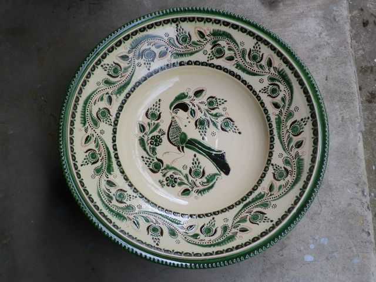

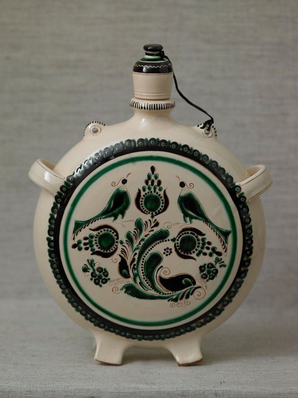

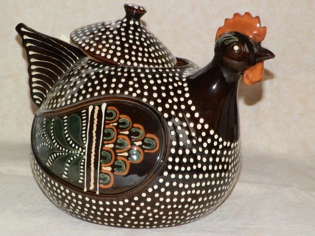

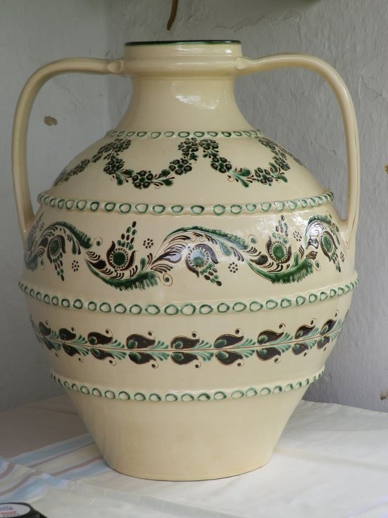

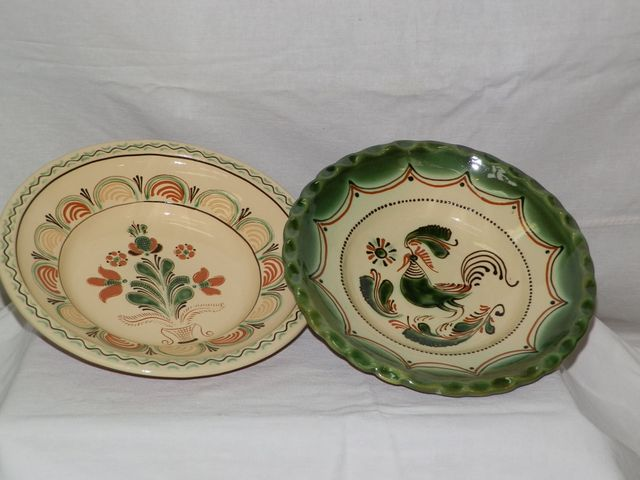

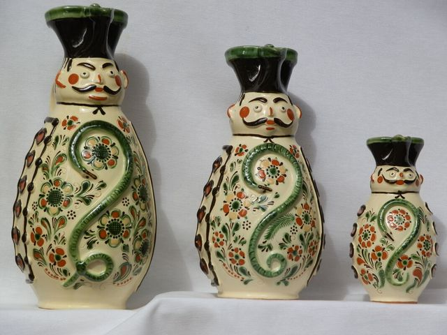


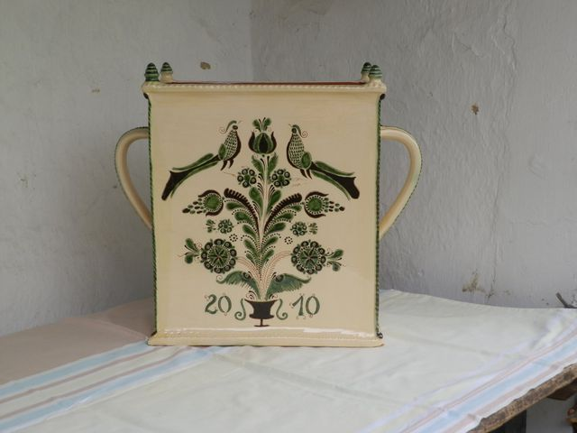

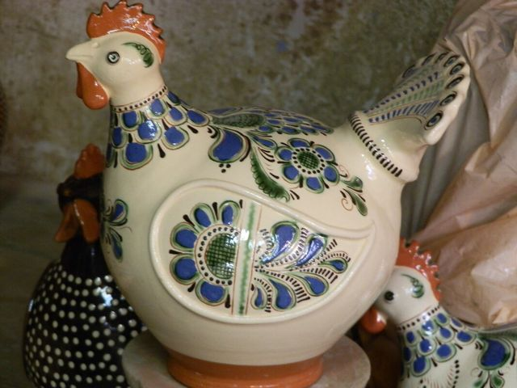


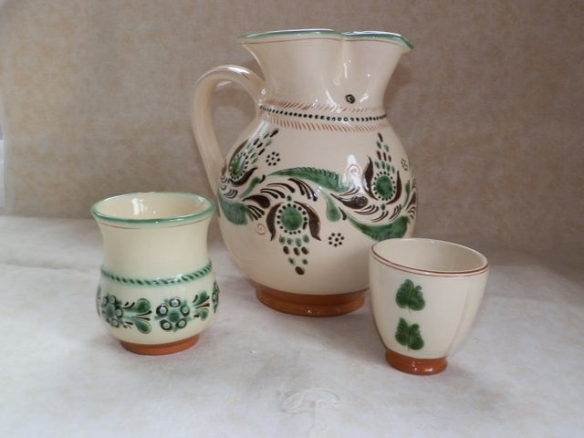

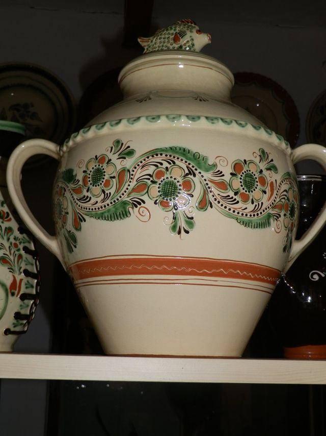

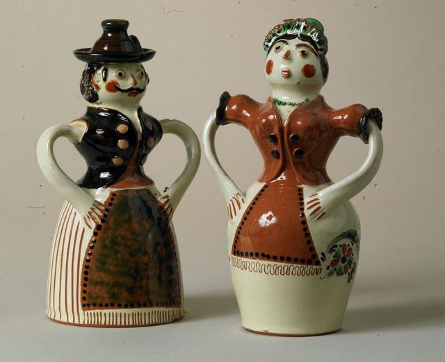

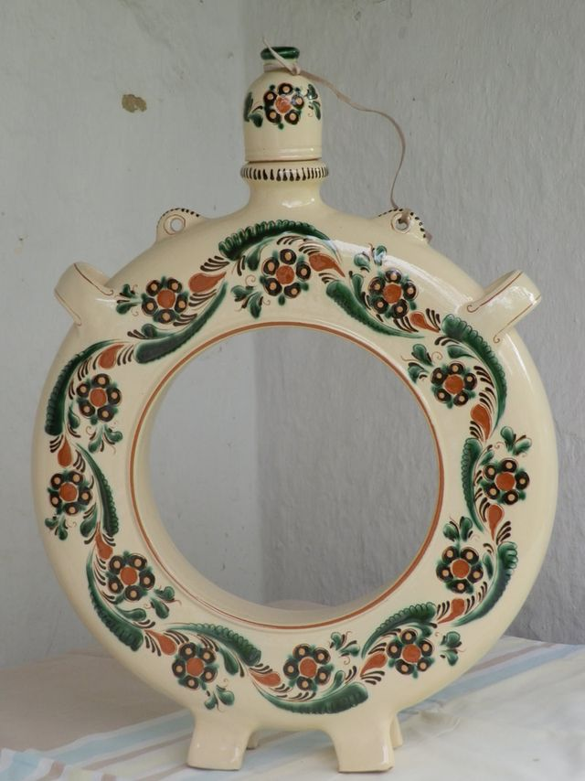

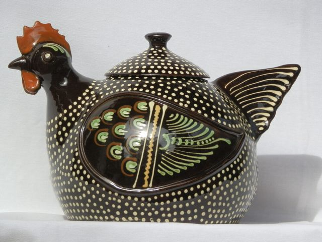

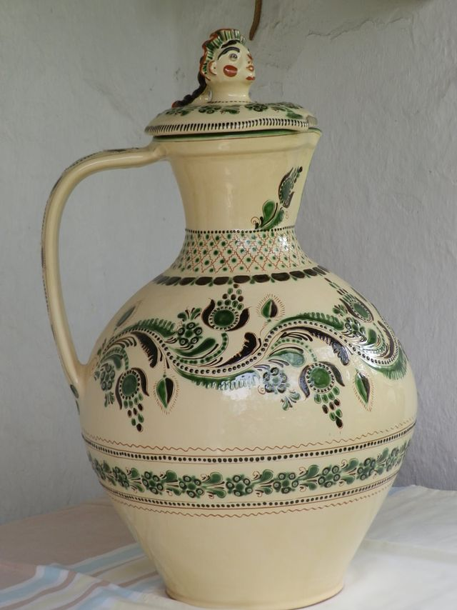

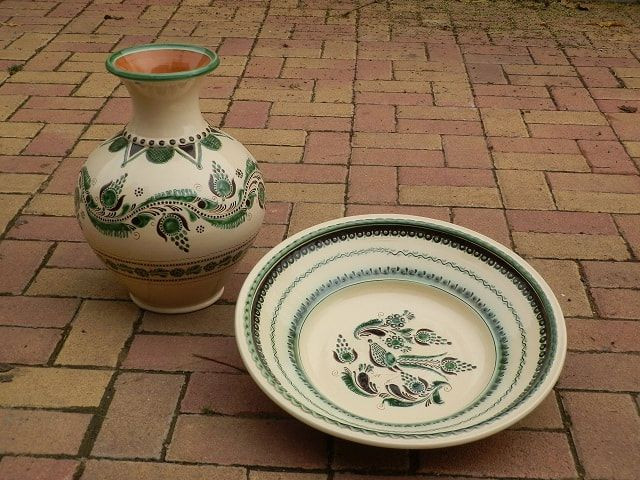

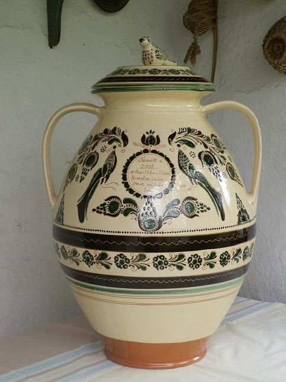

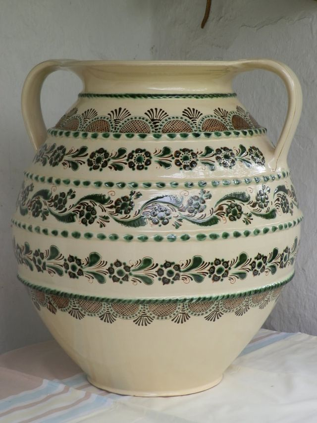

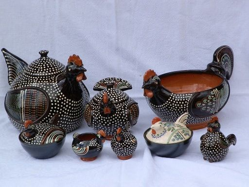

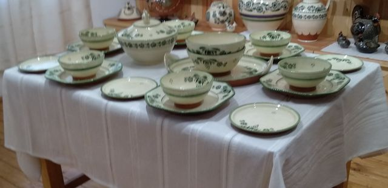
A „Szűcsimre-stílus”
Fehér alapon zöld és fekete
A kulacson és a bödönön látható díszítmény és színválaszték a „Szűcsimre-stílus” egyik jellegzetességét mutatja: fehér alapon zöld és fekete színű díszítő elemek, vajszínű mázzal. A tyúkok e stílus jellegzetes tyúkfigurái: a kendermagos tyúk és egy fehér virágmintás változat.
Szűcs Imre szakmai életrajza szerint az egyéni stílus elemei a teljesség igénye nélkül:
- a tyúkfigurák, több változatban – köztük a védett fajnak számító kendermagos tyúk;
- a vörös szín mellőzése;
- fehér alapon zöld-fekete díszítmény és sárga máz;
- a Háry-kancsó egyedi formája és díszítménye;
- tyúkok és kakasok mint díszítmény, nemcsak madarak;
- gyöngytyúk-díszítmény tálakon, szilkéken, kancsókon;
- dekoratív étkészletek fekete alapon fehér pettyes mintákkal;
- újszerű figurális edények változatos funkciókra.
Forrás: Szűcs Imre szakmai életrajza (PDF) és a honlap termékoldala.
A műhelyben
Munka a műhelyben

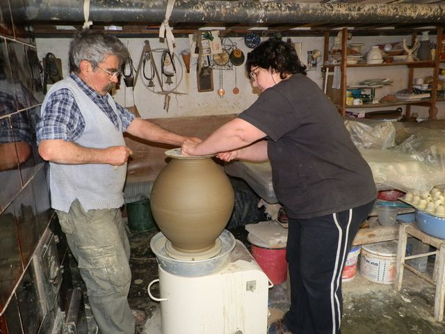

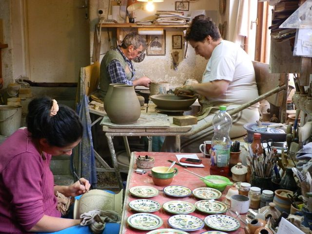

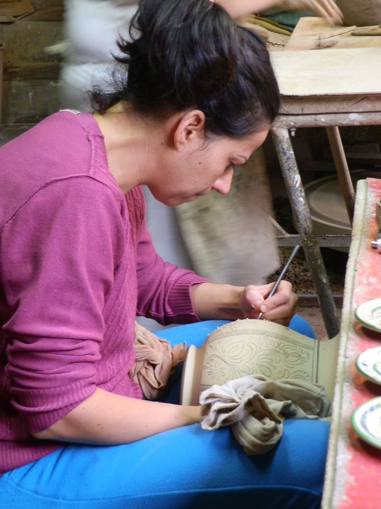

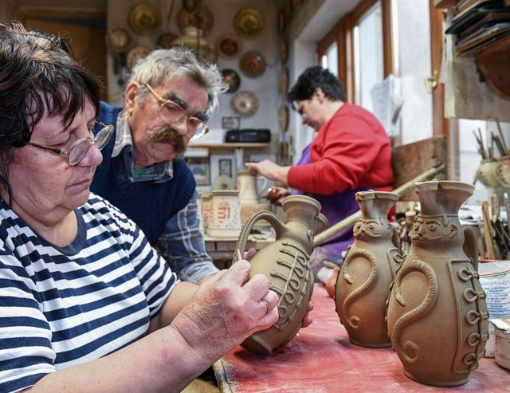
Megrendelés, vásárlás
Hogyan juthat az alkotásokhoz
Egyedi megrendelésre vagy késztermékek közül történő választással a vásárlás személyesen lehetséges a műhelyben (5350 Tiszafüred, Belsőkertsor utca 4/a). Egyedi feliratokkal és igény szerinti díszítésekkel is elkészítik a megrendelt tárgyakat.
Az étel-ital fogyasztására és tárolására szolgáló edények – a műhely tájékoztatása szerint – a magyar szabványok szerint nem tartalmaznak egészségkárosító anyagot.
Gyakorlati bemutatóra és képzésre a konkrét igények megismerése alapján adnak árajánlatot.
Előzetes egyeztetés
A tervezhetőség érdekében kérjük, előre egyeztessen időpontot: +36 59 351 483 vagy +36 70 321 9253.